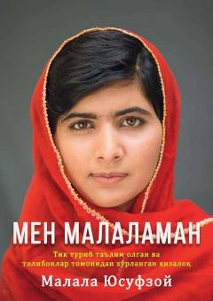

MMTolibon o'qiga duchor bo'lgan qizning jasorat va umid haqidagi hayot hikoyasi.
Bu kitob Nobel mukofoti sovrindori, pokistonlik faoliyatchi Malala Yusufzoyning hayoti haqidagi xotiralari asosida yozilgan. Muallif Tolibon hukmronligi davrida qizlar ta'limiga qarshi kurash, o'z joniga qasd qilinishi va bu og'ir sinovlardan omon chiqish tajribasini bayon etadi. Asar o'zbek tiliga Ahror Sharif tomonidan tarjima qilingan.